Show the code
pacman::p_load(
tidyverse,
jsonlite,
tidygraph,
ggraph,
visNetwork,
SmartEDA,
lubridate,
ggforce,
plotly
)May 27, 2025
June 1, 2025
Link to VAST Challenge 2025, Mini-Challenge 2.
Oceanus has enjoyed a relatively simple, fishing-based economy for decades. However, in recent times tourism has greatly expanded and resulted in significant changes. The local government set up an oversight board - Commission on Overseeing the Economic Future of Oceanus (COOTEFOO) - to monitor the current economy and advise how to prepare for the future. It is an appointed board that has no direct power on rules/spending BUT has a lot of clout in the civil service and gets government money to do its job…ostensibly in an unbiased way.
Recently COOTEFOO was hit by a sequence of scandals that roughly break down into two camps:
Fishing is Living and Heritage (FILAH) accuses the board of being biased toward the new tourism economy and inappropriately attending to the potential in those ventures, ignoring the historical powerhouse of the economy: Getting lots of fish out of the water and off to hungry people. They accuse some COOTEFOO members of bias against fishing.
Tourism Raises OceanUs Together (TROUT) accuses the board of being biased toward an entrenched interest and constantly “appeasing” the fishing industry, ignoring the new/growing avenues for economic stability. They accuse some members of ignoring the brave-new-world and living in the past.
A journalist, Edwina Darling Moray (E.D. to her friends), at the Haacklee Herald is working on a story about government accountability. She has acquired the datasets that TROUT and FILIAH are working from, which includes meeting minutes and travel records of COOTEFOO members. She also has acquired additional records that TROUT and FILAH did not. Moray has employed a staff programmer to massage the data into a consistent format for analysis – a knowledge graph. You are picking up the work from that programmer to design visualizations to support Moray’s understanding of what is going on. Moray is not a knowledge graph expert, but she understands the workings of Oceanus well. She wants you to design a visual interface to explore the accusations in context and discern which are founded and which are spurious.
Based on the datasets that TROUT & FILAH have provided, use visual analytics to determine if each group’s accusations are supported by their own record set. In other words, develop a visualization to highlight bias (if present) in TROUT & FILAHS datasets. Is there evidence of bias in the COOTEFOO member actions in either dataset?
As a journalist, Ms. Moray would like a more complete picture of the COOTEFOO’s actions and activities. She has arranged to combine the data provided by TROUT and FILAH into a single knowledge graph along with additional records. Design visual analytics approaches for this combined knowledge graph to see how members of COOTEFOO spend their time. Is the committee as a whole biased? Provide visual evidence for your conclusions.
The TROUT and FILAH datasets are incomplete. Use your visualizations to compare and contrast conclusions drawn from the TROUT and FILAH datasets separately with behaviors in the whole dataset. Are the accusations of TROUT strengthened, weakened or unchanged when taken in context of the whole dataset?
Design a visualization that allows Ms. Moray to pick a person and highlight the differences in that person’s behavior as illustrated through the different datasets. Focus on the contrast in the story each dataset tells.
Pick at least one COOTEFOO member accused by TROUT. Illustrate how your understanding of their activities changed when using the more complete dataset.
What are the key pieces of evidence missing from the original TROUT data that most influenced the change in judgement.
Whose behaviors are most impacted by sampling bias when looking at the FILAH dataset in context of the other data?
Illustrate the bias of the FILAH data in the context of the whole dataset.
In the code chunk below, p_load() of pacman package is used to load the R packages into R environment.
In the code chunk below, fromJSON() of jsonlite package is used to import the json files into R and save the output object.
Before preparing the data, it is always a good practice to examine the structure of filah knowledge graph.
In the code chunk below glimpse() is used to reveal the structure of filah knowledge graph.
List of 5
$ directed : logi TRUE
$ multigraph: logi TRUE
$ graph : Named list()
$ nodes :'data.frame': 396 obs. of 17 variables:
..$ type : chr [1:396] "meeting" "meeting" "meeting" "meeting" ...
..$ date : chr [1:396] "Meeting 1" "Meeting 2" "Meeting 3" "Meeting 4" ...
..$ label : chr [1:396] "Meeting 1" "Meeting 2" "Meeting 3" "Meeting 4" ...
..$ id : chr [1:396] "Meeting_1" "Meeting_2" "Meeting_3" "Meeting_4" ...
..$ name : chr [1:396] NA NA NA NA ...
..$ role : chr [1:396] NA NA NA NA ...
..$ short_topic: chr [1:396] NA NA NA NA ...
..$ long_topic : chr [1:396] NA NA NA NA ...
..$ short_title: chr [1:396] NA NA NA NA ...
..$ long_title : chr [1:396] NA NA NA NA ...
..$ plan_type : chr [1:396] NA NA NA NA ...
..$ lat : num [1:396] NA NA NA NA NA NA NA NA NA NA ...
..$ lon : num [1:396] NA NA NA NA NA NA NA NA NA NA ...
..$ zone : chr [1:396] NA NA NA NA ...
..$ zone_detail: chr [1:396] NA NA NA NA ...
..$ start : chr [1:396] NA NA NA NA ...
..$ end : chr [1:396] NA NA NA NA ...
$ links :'data.frame': 765 obs. of 9 variables:
..$ role : chr [1:765] "part_of" "part_of" "part_of" "part_of" ...
..$ source : chr [1:765] "Meeting_1" "Meeting_1" "Meeting_1" "Meeting_1" ...
..$ target : chr [1:765] "fish_vacuum_Meeting_1_Introduction_Discussion" "fish_vacuum_Meeting_1_Introduction" "seafood_festival_Meeting_1_Discussion" "seafood_festival_Meeting_1_Feasibility" ...
..$ key : int [1:765] 0 0 0 0 0 0 0 0 0 0 ...
..$ sentiment: num [1:765] NA NA NA NA NA NA NA NA NA NA ...
..$ reason : chr [1:765] NA NA NA NA ...
..$ industry :List of 765
.. ..$ : NULL
.. ..$ : NULL
.. ..$ : NULL
.. ..$ : NULL
.. ..$ : NULL
.. ..$ : NULL
.. ..$ : NULL
.. ..$ : NULL
.. ..$ : NULL
.. ..$ : NULL
.. ..$ : NULL
.. ..$ : NULL
.. ..$ : NULL
.. ..$ : NULL
.. ..$ : NULL
.. ..$ : NULL
.. ..$ : NULL
.. ..$ : NULL
.. ..$ : NULL
.. ..$ : NULL
.. ..$ : NULL
.. ..$ : NULL
.. ..$ : NULL
.. ..$ : NULL
.. ..$ : NULL
.. ..$ : NULL
.. ..$ : NULL
.. ..$ : NULL
.. ..$ : NULL
.. ..$ : NULL
.. ..$ : NULL
.. ..$ : NULL
.. ..$ : NULL
.. ..$ : NULL
.. ..$ : NULL
.. ..$ : NULL
.. ..$ : NULL
.. ..$ : NULL
.. ..$ : NULL
.. ..$ : NULL
.. ..$ : NULL
.. ..$ : NULL
.. ..$ : NULL
.. ..$ : NULL
.. ..$ : NULL
.. ..$ : NULL
.. ..$ : NULL
.. ..$ : NULL
.. ..$ : NULL
.. ..$ : NULL
.. ..$ : NULL
.. ..$ : NULL
.. ..$ : NULL
.. ..$ : NULL
.. ..$ : NULL
.. ..$ : NULL
.. ..$ : NULL
.. ..$ : NULL
.. ..$ : NULL
.. ..$ : NULL
.. ..$ : NULL
.. ..$ : NULL
.. ..$ : NULL
.. ..$ : NULL
.. ..$ : NULL
.. ..$ : NULL
.. ..$ : NULL
.. ..$ : NULL
.. ..$ : NULL
.. ..$ : NULL
.. ..$ : NULL
.. ..$ : NULL
.. ..$ : NULL
.. ..$ : NULL
.. ..$ : NULL
.. ..$ : NULL
.. ..$ : NULL
.. ..$ : NULL
.. ..$ : NULL
.. ..$ : NULL
.. ..$ : NULL
.. ..$ : NULL
.. ..$ : NULL
.. ..$ : NULL
.. ..$ : NULL
.. ..$ : NULL
.. ..$ : NULL
.. ..$ : NULL
.. ..$ : NULL
.. ..$ : NULL
.. ..$ : NULL
.. ..$ : NULL
.. ..$ : NULL
.. ..$ : NULL
.. ..$ : NULL
.. ..$ : NULL
.. ..$ : NULL
.. ..$ : NULL
.. ..$ : NULL
.. .. [list output truncated]
..$ status : chr [1:765] NA NA NA NA ...
..$ time : chr [1:765] NA NA NA NA ...Next, as_tibble() of tibble package package is used to extract the nodes and links tibble data frames from filah tibble dataframe into two separate tibble dataframes called filah_nodes and filah_edges respectively.
We removed (dropped) the industry column only when building the tbl_graph object because tidygraph’s tbl_graph() function does not accept list-typed columns in the edges data frame. In other words, the “industry” field was stored as a list (e.g. ["tourism"] or ["large vessel", "small vessel"]), and that structure would cause an error if passed directly into tbl_graph().
Rows: 765
Columns: 8
$ role <chr> "part_of", "part_of", "part_of", "part_of", "part_of", "part…
$ source <chr> "Meeting_1", "Meeting_1", "Meeting_1", "Meeting_1", "Meeting…
$ target <chr> "fish_vacuum_Meeting_1_Introduction_Discussion", "fish_vacuu…
$ key <int> 0, 0, 0, 0, 0, 0, 0, 0, 0, 0, 0, 0, 0, 0, 0, 0, 0, 0, 0, 0, …
$ sentiment <dbl> NA, NA, NA, NA, NA, NA, NA, NA, NA, NA, NA, NA, NA, NA, NA, …
$ reason <chr> NA, NA, NA, NA, NA, NA, NA, NA, NA, NA, NA, NA, NA, NA, NA, …
$ status <chr> NA, NA, NA, NA, NA, NA, NA, NA, NA, NA, NA, NA, NA, NA, NA, …
$ time <chr> NA, NA, NA, NA, NA, NA, NA, NA, NA, NA, NA, NA, NA, NA, NA, …It is time for us to apply appropriate EDA methods to examine the data.
In the code chunk below, ExpCatViz() of SmartEDA package is used to reveal the frequency distribution of all categorical fields in filah_nodes tibble dataframe.
[[1]]
[[2]]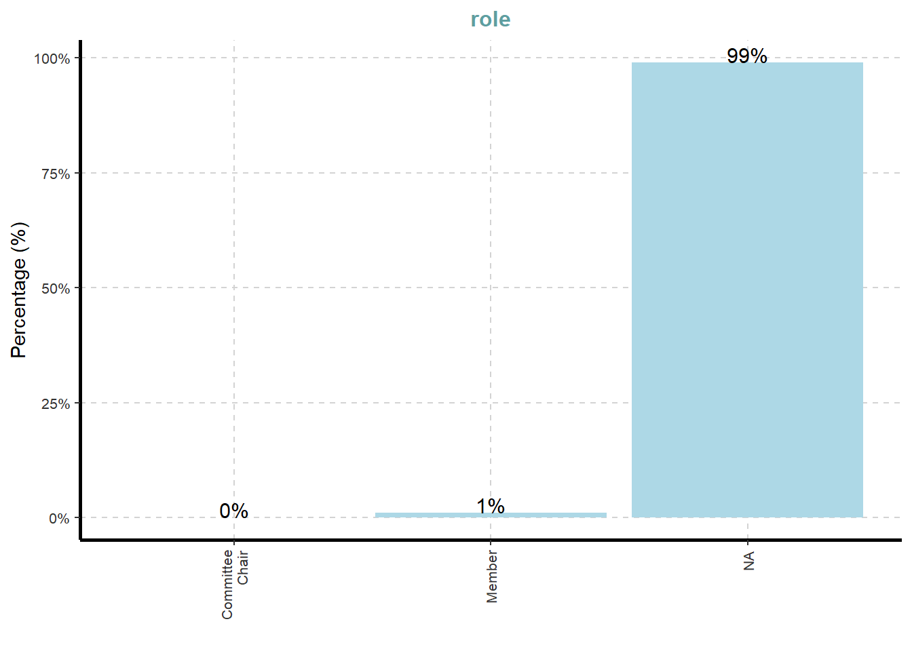
[[3]]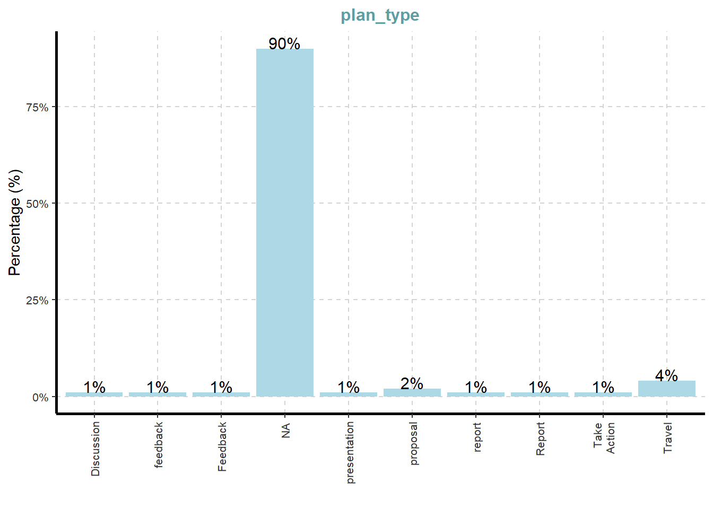
[[4]]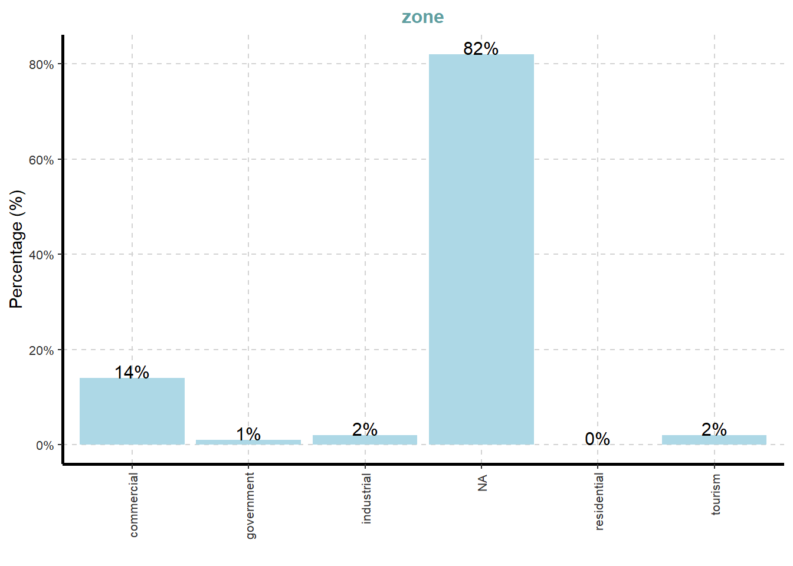
[[5]]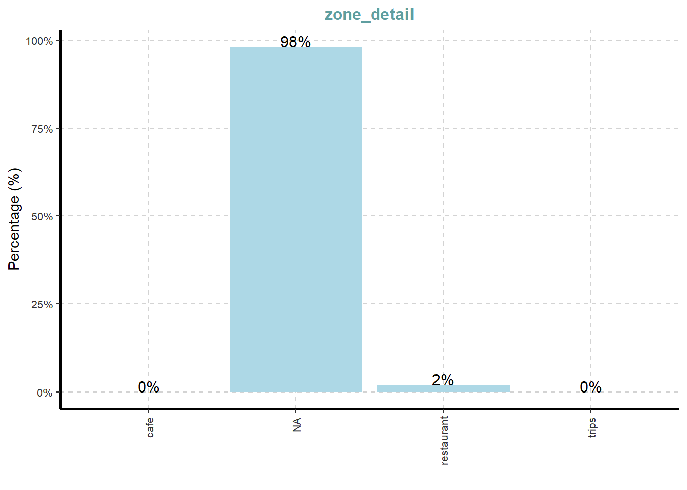
Type: Almost half of all nodes (48 %) are “trip,” with “discussion” and “place” each around 15 %. Person nodes constitute only about 1 %, meaning most entries are activities or locations rather than individuals.
Role: Nearly every node (99 %) has no role defined. Only about 1 % are labeled “Member,” indicating that role metadata is effectively absent for the vast majority.
Plan_type: About 90 % of nodes lack any plan type. Of the few that do, “Travel” makes up most (4 %), while other categories each hover around 1 %.
Zone: Over 80 % of nodes have no zone specified. Among those with a zone, “commercial” is most common (14 %), with “industrial” and “tourism” each at 2 %.
Zone_detail: Almost all nodes (98 %) lack detailed zoning. Only 2 % are tagged “restaurant,” and none are “cafe” or “trips.”
[[1]]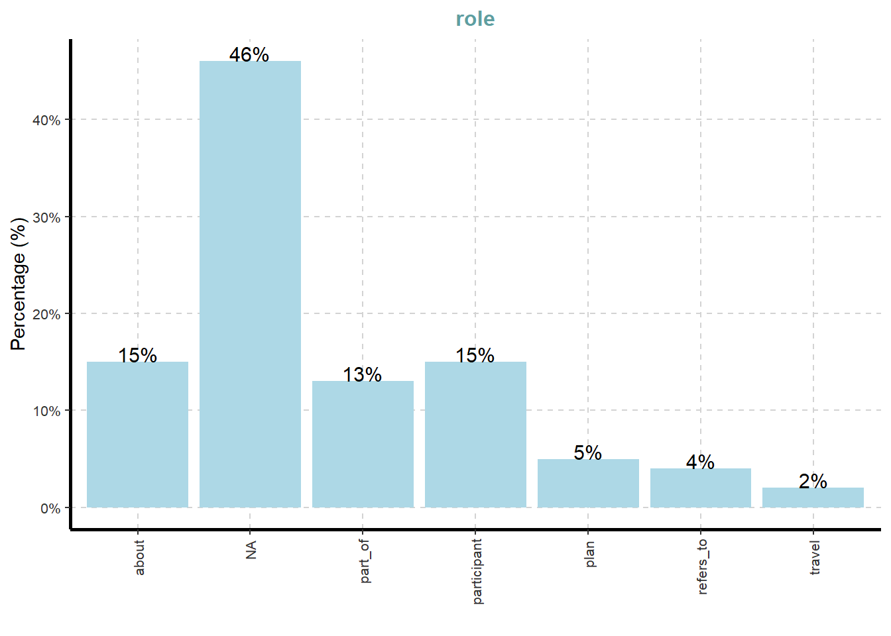
[[2]]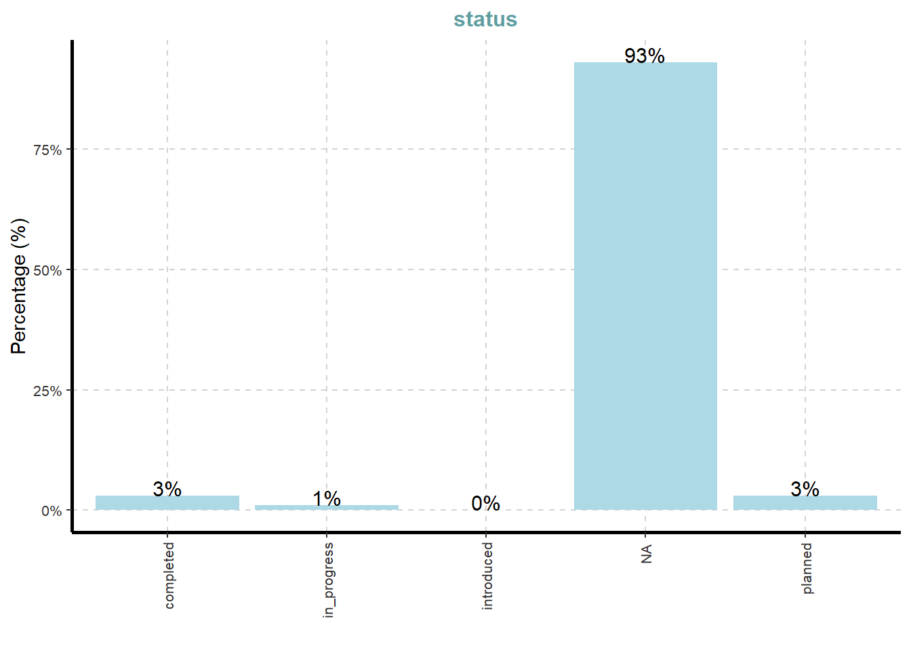
[[3]]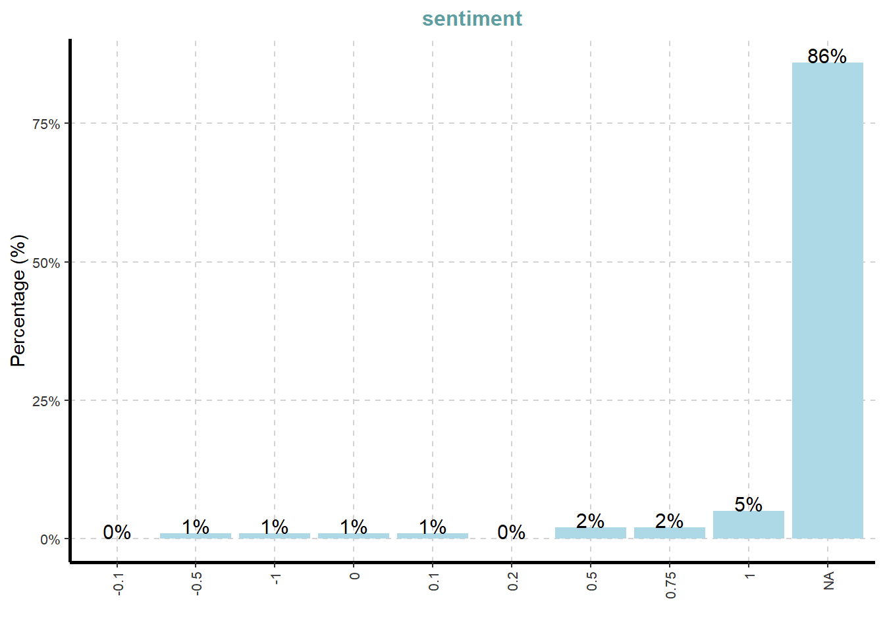
Role: Nearly half of all edges (46 %) have no role label. Of the remainder, roughly 15 % are “about,” 15 % are “participant,” and 13 % are “part_of.” Only a small fraction describe “plan” (5 %), “refers_to” (4 %) or “travel” (2 %). In other words, most edges in FILAH carry no explicit role tag, and the few that do are predominantly “about” or “participant.
Status: An overwhelming 93 % of edges lack any status value. Only about 3 % are marked “completed,” 3 % as “planned,” and 1 % as “in_progress,” with virtually none labelled “introduced.” This tells us that nearly all edge records do not include a status field.
Sentiment: Fully 86 % of edges have no sentiment score. Among those that do, only 5 % record a positive sentiment of +1, 2 % each record +0.5 or +0.75, and about 1 % each record −1, −0.5 or +0.1. Only a handful record any negative sentiment at all. Thus, sentiment annotations are extremely sparse, and the few that exist skew positive.
Latitude: FILAH nodes cluster in two thin horizontal bands (around −165° and −164.5°), showing a bimodal spread rather than a single central latitude.
Longitude: FILAH nodes likewise group around two vertical bands (near 39.1° and 39.5°), indicating two main east–west zones rather than a uniform distribution.
The sentiment values in FILAH’s edges are heavily clustered toward +1, with very few negative or neutral scores. The curve rises steadily from around 0 to peak near +0.9, indicating most recorded sentiments are strongly positive; the slight negative skew (−1.04) shows a small tail of negative values. This confirms that FILAH’s edge‐level opinions overwhelmingly favour tourism.
filah_edges_cleaned <- filah_edges %>%
rename(from = source, to = target) %>%
mutate(across(c(from, to), as.character)) %>%
filter(from %in% filah_nodes_cleaned$id, to %in% filah_nodes_cleaned$id)
# Remove problematic columns from edge table for graph building
filah_edges_min <- filah_edges_cleaned %>%
select(from, to, role) # Only basic fields needed for graph structureSeveral of the ggraph layouts involve randomisation. In order to ensure reproducibility, it is necessary to set the seed value before plotting by using the code chunk below.
In the code chunk below, ggraph functions are used to create the whole graph.
This FILAH‐only network makes clear that almost everything in their records centers on “trip” and “place” nodes, with far fewer “meeting,” “discussion,” or “topic” nodes. In other words, FILAH’s data is overwhelmingly composed of location‐based events (site visits, excursions, etc.) rather than formal meetings or thematic discussions. This pattern suggests that FILAH’s subset heavily emphasizes tourism‐style activities (trips and places) over fishing‐related gatherings (meetings, discussions), reflecting a pronounced tourism focus in their sampling.
List of 5
$ directed : logi TRUE
$ multigraph: logi TRUE
$ graph : Named list()
$ nodes :'data.frame': 164 obs. of 17 variables:
..$ type : chr [1:164] "plan" "plan" "plan" "meeting" ...
..$ short_title: chr [1:164] "marine_life_deck_Meeting_12_Environmental_Impact_Report" "low_volume_crane_Meeting_8_Report" "deep_fishing_dock_Meeting_3_Maintenance_Plan" NA ...
..$ long_title : chr [1:164] "Present findings from the environmental impact study" "Report on travel and submit letter of support for low-volume unload crane" "Discuss maintenance plan and designate travel representatives" NA ...
..$ plan_type : chr [1:164] "Report" "report" "proposal" NA ...
..$ label : chr [1:164] "marine_life_deck_Meeting_12_Environmental_Impact_Report" "low_volume_crane_Meeting_8_Report" "deep_fishing_dock_Meeting_3_Maintenance_Plan" "Meeting 16" ...
..$ id : chr [1:164] "marine_life_deck_Meeting_12_Environmental_Impact_Report" "low_volume_crane_Meeting_8_Report" "deep_fishing_dock_Meeting_3_Maintenance_Plan" "Meeting_16" ...
..$ date : chr [1:164] NA NA NA "Meeting 16" ...
..$ short_topic: chr [1:164] NA NA NA NA ...
..$ long_topic : chr [1:164] NA NA NA NA ...
..$ lat : num [1:164] NA NA NA NA NA ...
..$ lon : num [1:164] NA NA NA NA NA ...
..$ zone : chr [1:164] NA NA NA NA ...
..$ zone_detail: chr [1:164] NA NA NA NA ...
..$ name : chr [1:164] NA NA NA NA ...
..$ role : chr [1:164] NA NA NA NA ...
..$ start : chr [1:164] NA NA NA NA ...
..$ end : chr [1:164] NA NA NA NA ...
$ links :'data.frame': 378 obs. of 9 variables:
..$ role : chr [1:378] "plan" "participant" "plan" "participant" ...
..$ source : chr [1:378] "marine_life_deck_Meeting_12_Environmental_Impact_Report" "marine_life_deck_Meeting_12_Environmental_Impact_Report" "low_volume_crane_Meeting_8_Report" "low_volume_crane_Meeting_8_Report" ...
..$ target : chr [1:378] "marine_life_deck" "Teddy Goldstein" "low_volume_crane" "Seal" ...
..$ key : int [1:378] 0 0 0 0 0 0 0 0 0 0 ...
..$ sentiment: num [1:378] NA -0.5 NA 0.1 NA NA NA NA NA NA ...
..$ reason : chr [1:378] NA "Prefers resources to be allocated toward the fishing industry." NA "Recognizes the crane's benefit to small-scale operations." ...
..$ industry :List of 378
.. ..$ : NULL
.. ..$ : chr "tourism"
.. ..$ : NULL
.. ..$ : chr "small vessel"
.. ..$ : NULL
.. ..$ : NULL
.. ..$ : NULL
.. ..$ : NULL
.. ..$ : NULL
.. ..$ : NULL
.. ..$ : NULL
.. ..$ : chr "tourism"
.. ..$ : NULL
.. ..$ : NULL
.. ..$ : chr [1:2] "large vessel" "small vessel"
.. ..$ : chr [1:2] "large vessel" "small vessel"
.. ..$ : NULL
.. ..$ : NULL
.. ..$ : chr "small vessel"
.. ..$ : NULL
.. ..$ : NULL
.. ..$ : NULL
.. ..$ : NULL
.. ..$ : NULL
.. ..$ : NULL
.. ..$ : NULL
.. ..$ : NULL
.. ..$ : NULL
.. ..$ : NULL
.. ..$ : NULL
.. ..$ : NULL
.. ..$ : NULL
.. ..$ : NULL
.. ..$ : NULL
.. ..$ : NULL
.. ..$ : chr [1:2] "large vessel" "small vessel"
.. ..$ : NULL
.. ..$ : NULL
.. ..$ : chr "tourism"
.. ..$ : NULL
.. ..$ : NULL
.. ..$ : chr "small vessel"
.. ..$ : NULL
.. ..$ : NULL
.. ..$ : NULL
.. ..$ : chr [1:2] "large vessel" "small vessel"
.. ..$ : chr [1:2] "large vessel" "small vessel"
.. ..$ : NULL
.. ..$ : NULL
.. ..$ : chr "large vessel"
.. ..$ : NULL
.. ..$ : NULL
.. ..$ : chr [1:2] "large vessel" "small vessel"
.. ..$ : NULL
.. ..$ : NULL
.. ..$ : NULL
.. ..$ : chr [1:2] "large vessel" "small vessel"
.. ..$ : NULL
.. ..$ : NULL
.. ..$ : NULL
.. ..$ : NULL
.. ..$ : NULL
.. ..$ : NULL
.. ..$ : NULL
.. ..$ : NULL
.. ..$ : NULL
.. ..$ : NULL
.. ..$ : chr "small vessel"
.. ..$ : NULL
.. ..$ : chr "tourism"
.. ..$ : NULL
.. ..$ : list()
.. ..$ : NULL
.. ..$ : NULL
.. ..$ : NULL
.. ..$ : NULL
.. ..$ : NULL
.. ..$ : NULL
.. ..$ : NULL
.. ..$ : chr "tourism"
.. ..$ : NULL
.. ..$ : chr "large vessel"
.. ..$ : NULL
.. ..$ : NULL
.. ..$ : chr "tourism"
.. ..$ : chr "tourism"
.. ..$ : NULL
.. ..$ : NULL
.. ..$ : NULL
.. ..$ : chr "large vessel"
.. ..$ : NULL
.. ..$ : chr "tourism"
.. ..$ : chr "tourism"
.. ..$ : NULL
.. ..$ : chr [1:2] "large vessel" "small vessel"
.. ..$ : chr [1:2] "large vessel" "small vessel"
.. ..$ : NULL
.. ..$ : NULL
.. ..$ : list()
.. .. [list output truncated]
..$ status : chr [1:378] NA NA NA NA ...
..$ time : chr [1:378] NA NA NA NA ...Rows: 378
Columns: 8
$ role <chr> "plan", "participant", "plan", "participant", "plan", "parti…
$ source <chr> "marine_life_deck_Meeting_12_Environmental_Impact_Report", "…
$ target <chr> "marine_life_deck", "Teddy Goldstein", "low_volume_crane", "…
$ key <int> 0, 0, 0, 0, 0, 0, 0, 0, 0, 0, 0, 0, 0, 0, 0, 0, 0, 0, 0, 0, …
$ sentiment <dbl> NA, -0.5, NA, 0.1, NA, NA, NA, NA, NA, NA, NA, 0.5, NA, NA, …
$ reason <chr> NA, "Prefers resources to be allocated toward the fishing in…
$ status <chr> NA, NA, NA, NA, NA, NA, NA, NA, NA, "completed", NA, NA, "pl…
$ time <chr> NA, NA, NA, NA, NA, NA, NA, NA, NA, NA, NA, NA, NA, NA, NA, …[[1]]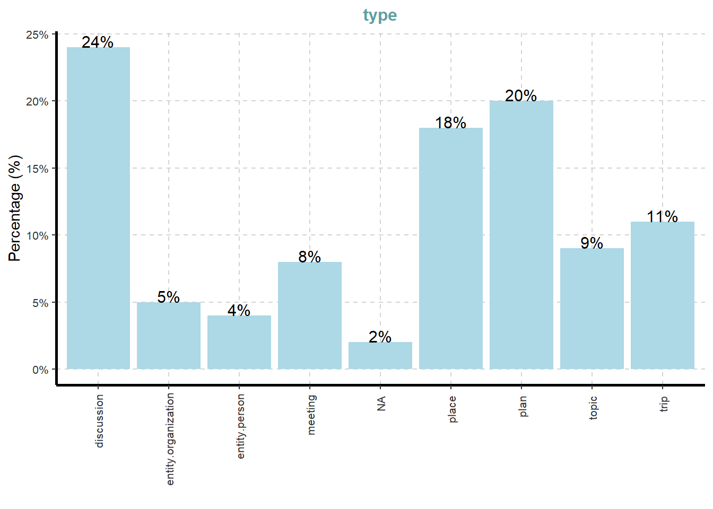
[[2]]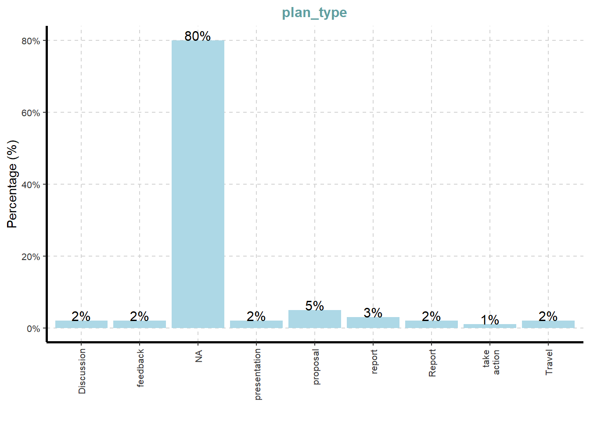
[[3]]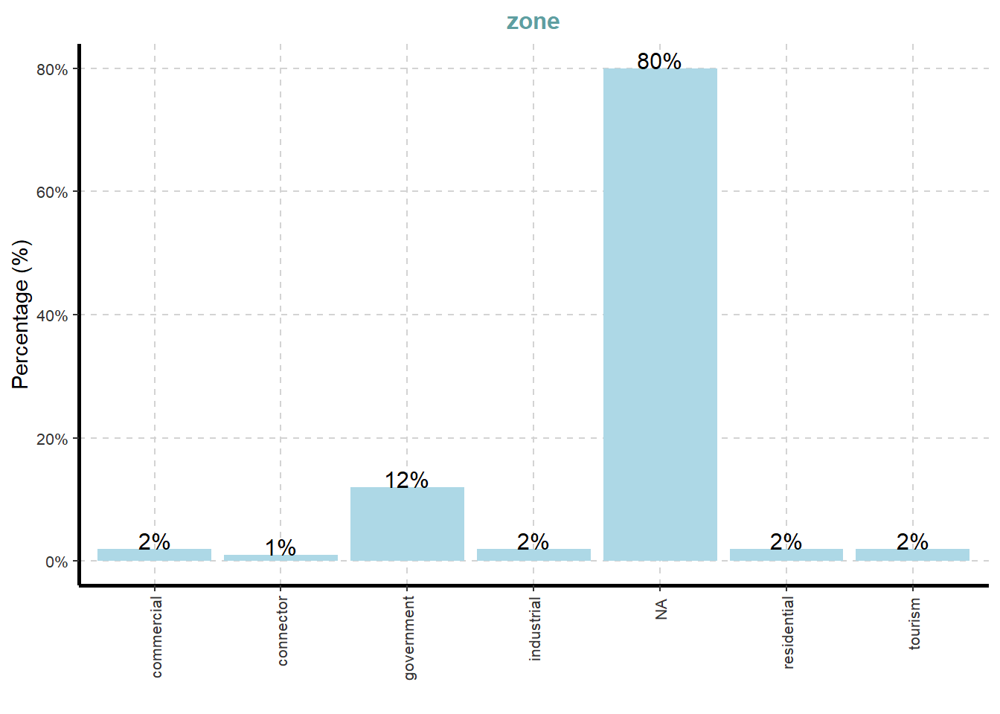
[[4]]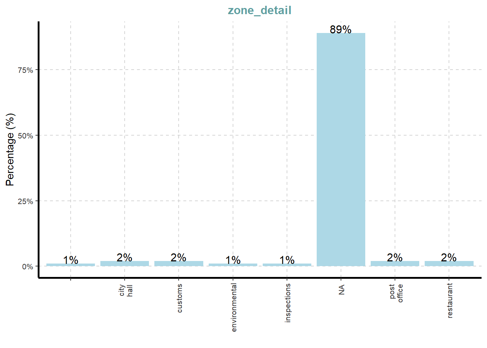
[[5]]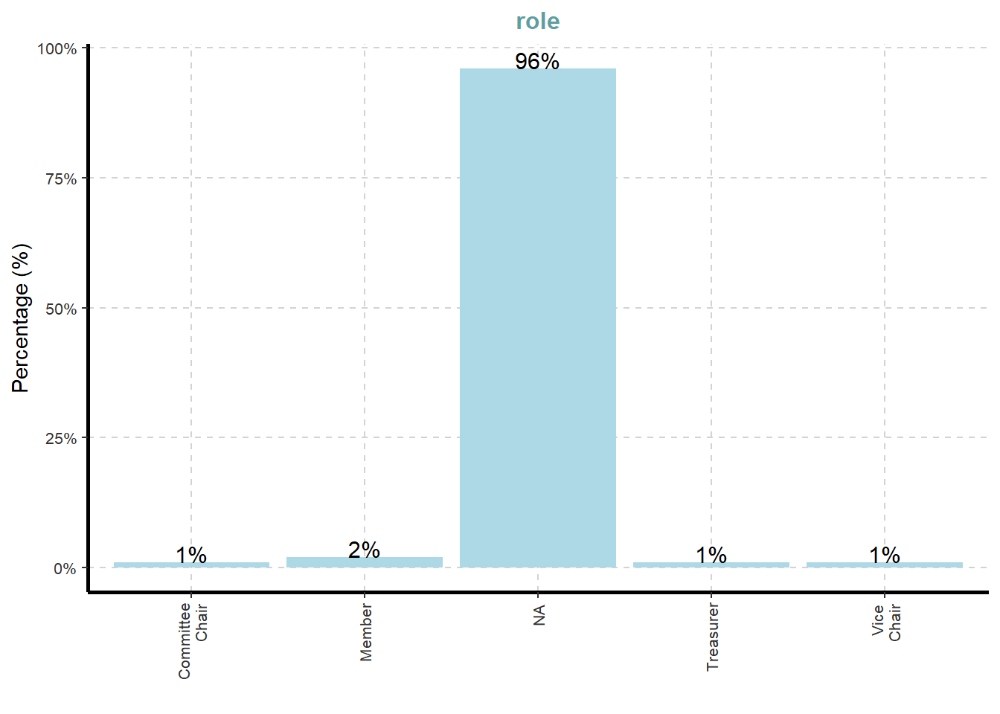
Type: “discussion” (24 %), “plan” (20 %) and “place” (18 %) dominate; actual “entity.person” nodes are only 4 %.
Plan_type: 80 % have no plan; among the rest, “proposal” is most common (5 %).
Zone: 80 % lack zoning; of those with a zone, “government” leads at 12 %
Zone_detail: 89 % have no detail; only about 2 % tag “restaurant” or “post office.”
Role: 96 % have no role; “Member,” “Committee Chair,” “Treasurer” and “Vice-Chair” each appear at just 1–2 %.
[[1]]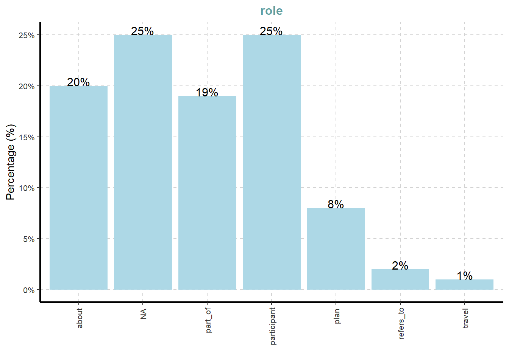
[[2]]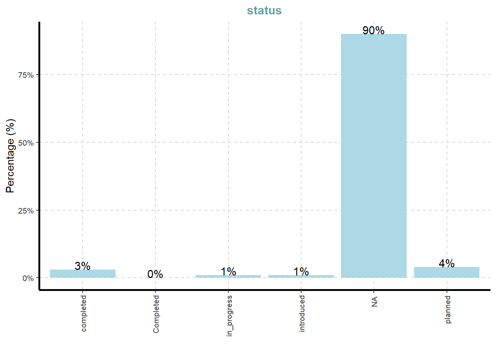
[[3]]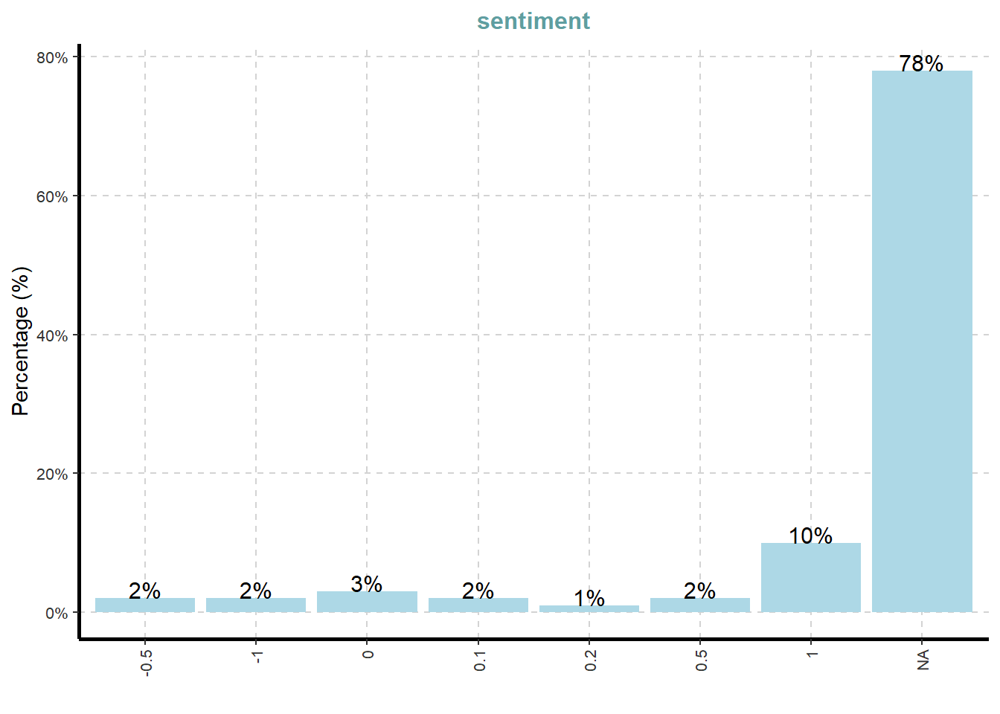
Sentiment: 78 % of edges lack sentiment; of the rest, most recorded values are +1, with only a few negative or neutral scores.
Status: 90 % of edges have no status; among those that do, “planned” (4 %) and “completed” (3 %) are the only sizable categories.
Role: Edges split mainly between “about” (20 %), “participant” (25 %) and “part_of” (19 %); smaller shares are “plan” (8 %), “refers_to” (2 %) and “travel” (1 %).
Latitude: TROUT nodes cluster in two main latitude bands—one just below −165.5° and another around −164.5°—indicating two distinct north–south groupings rather than a single homogeneous band.
Longitude: TROUT nodes likewise split into two east–west concentrations, with one mode near 39.1° and another stronger mode around 39.5°, showing that node locations fall into two primary longitudinal zones.
Most recorded sentiments cluster at +1, with a smaller bump around zero. In other words, whenever TROUT edges carry sentiment, they are overwhelmingly positive.
trout_edges_cleaned <- trout_edges %>%
rename(from = source, to = target) %>%
mutate(across(c(from, to), as.character)) %>%
filter(from %in% trout_nodes_cleaned$id,
to %in% trout_nodes_cleaned$id)
# Remove problematic columns (like industry) so only basic fields remain
trout_edges_min <- trout_edges_cleaned %>%
select(from, to, role)This TROUT‐only network reveals the opposite bias from FILAH’s map. Here, the bulk of nodes are “meeting,” “plan,” and “topic” types (clustered on the left side), with far fewer “trip” or “place” nodes (clustered on the right). In other words, TROUT’s records emphasize committee meetings and discussion‐oriented activities rather than site visits. This pattern indicates that TROUT’s subset is heavily focused on formal deliberations (often fishing‐related) instead of tourist‐style excursions, reflecting a pronounced fishing‐leaning sampling bias in their data.
List of 5
$ directed : logi TRUE
$ multigraph: logi TRUE
$ graph : Named list()
$ nodes :'data.frame': 740 obs. of 17 variables:
..$ type : chr [1:740] "meeting" "meeting" "meeting" "meeting" ...
..$ date : chr [1:740] "Meeting 1" "Meeting 2" "Meeting 3" "Meeting 4" ...
..$ label : chr [1:740] "Meeting 1" "Meeting 2" "Meeting 3" "Meeting 4" ...
..$ id : chr [1:740] "Meeting_1" "Meeting_2" "Meeting_3" "Meeting_4" ...
..$ name : chr [1:740] NA NA NA NA ...
..$ role : chr [1:740] NA NA NA NA ...
..$ short_topic: chr [1:740] NA NA NA NA ...
..$ long_topic : chr [1:740] NA NA NA NA ...
..$ short_title: chr [1:740] NA NA NA NA ...
..$ long_title : chr [1:740] NA NA NA NA ...
..$ plan_type : chr [1:740] NA NA NA NA ...
..$ lat : num [1:740] NA NA NA NA NA NA NA NA NA NA ...
..$ lon : num [1:740] NA NA NA NA NA NA NA NA NA NA ...
..$ zone : chr [1:740] NA NA NA NA ...
..$ zone_detail: chr [1:740] NA NA NA NA ...
..$ start : chr [1:740] NA NA NA NA ...
..$ end : chr [1:740] NA NA NA NA ...
$ links :'data.frame': 2436 obs. of 9 variables:
..$ role : chr [1:2436] "part_of" "part_of" "part_of" "part_of" ...
..$ source : chr [1:2436] "Meeting_1" "Meeting_1" "Meeting_1" "Meeting_1" ...
..$ target : chr [1:2436] "fish_vacuum_Meeting_1_Introduction_Discussion" "fish_vacuum_Meeting_1_Introduction" "seafood_festival_Meeting_1_Discussion" "seafood_festival_Meeting_1_Feasibility" ...
..$ key : int [1:2436] 0 0 0 0 0 0 0 0 0 0 ...
..$ sentiment: num [1:2436] NA NA NA NA NA NA NA NA NA NA ...
..$ reason : chr [1:2436] NA NA NA NA ...
..$ industry :List of 2436
.. ..$ : NULL
.. ..$ : NULL
.. ..$ : NULL
.. ..$ : NULL
.. ..$ : NULL
.. ..$ : NULL
.. ..$ : NULL
.. ..$ : NULL
.. ..$ : NULL
.. ..$ : NULL
.. ..$ : NULL
.. ..$ : NULL
.. ..$ : NULL
.. ..$ : NULL
.. ..$ : NULL
.. ..$ : NULL
.. ..$ : NULL
.. ..$ : NULL
.. ..$ : NULL
.. ..$ : NULL
.. ..$ : NULL
.. ..$ : NULL
.. ..$ : NULL
.. ..$ : NULL
.. ..$ : NULL
.. ..$ : NULL
.. ..$ : NULL
.. ..$ : NULL
.. ..$ : NULL
.. ..$ : NULL
.. ..$ : NULL
.. ..$ : NULL
.. ..$ : NULL
.. ..$ : NULL
.. ..$ : NULL
.. ..$ : NULL
.. ..$ : NULL
.. ..$ : NULL
.. ..$ : NULL
.. ..$ : NULL
.. ..$ : NULL
.. ..$ : NULL
.. ..$ : NULL
.. ..$ : NULL
.. ..$ : NULL
.. ..$ : NULL
.. ..$ : NULL
.. ..$ : NULL
.. ..$ : NULL
.. ..$ : NULL
.. ..$ : NULL
.. ..$ : NULL
.. ..$ : NULL
.. ..$ : NULL
.. ..$ : NULL
.. ..$ : NULL
.. ..$ : NULL
.. ..$ : NULL
.. ..$ : NULL
.. ..$ : NULL
.. ..$ : NULL
.. ..$ : NULL
.. ..$ : NULL
.. ..$ : NULL
.. ..$ : NULL
.. ..$ : NULL
.. ..$ : NULL
.. ..$ : NULL
.. ..$ : NULL
.. ..$ : NULL
.. ..$ : NULL
.. ..$ : NULL
.. ..$ : NULL
.. ..$ : NULL
.. ..$ : NULL
.. ..$ : NULL
.. ..$ : NULL
.. ..$ : NULL
.. ..$ : NULL
.. ..$ : NULL
.. ..$ : NULL
.. ..$ : NULL
.. ..$ : NULL
.. ..$ : NULL
.. ..$ : NULL
.. ..$ : NULL
.. ..$ : NULL
.. ..$ : NULL
.. ..$ : NULL
.. ..$ : NULL
.. ..$ : NULL
.. ..$ : NULL
.. ..$ : NULL
.. ..$ : NULL
.. ..$ : NULL
.. ..$ : NULL
.. ..$ : NULL
.. ..$ : NULL
.. ..$ : NULL
.. .. [list output truncated]
..$ status : chr [1:2436] NA NA NA NA ...
..$ time : chr [1:2436] NA NA NA NA ...Rows: 2,436
Columns: 8
$ role <chr> "part_of", "part_of", "part_of", "part_of", "part_of", "part…
$ source <chr> "Meeting_1", "Meeting_1", "Meeting_1", "Meeting_1", "Meeting…
$ target <chr> "fish_vacuum_Meeting_1_Introduction_Discussion", "fish_vacuu…
$ key <int> 0, 0, 0, 0, 0, 0, 0, 0, 0, 0, 0, 0, 0, 0, 0, 0, 0, 0, 0, 0, …
$ sentiment <dbl> NA, NA, NA, NA, NA, NA, NA, NA, NA, NA, NA, NA, NA, NA, NA, …
$ reason <chr> NA, NA, NA, NA, NA, NA, NA, NA, NA, NA, NA, NA, NA, NA, NA, …
$ status <chr> NA, NA, NA, NA, NA, NA, NA, NA, NA, NA, NA, NA, NA, NA, NA, …
$ time <chr> NA, NA, NA, NA, NA, NA, NA, NA, NA, NA, NA, NA, NA, NA, NA, …[[1]]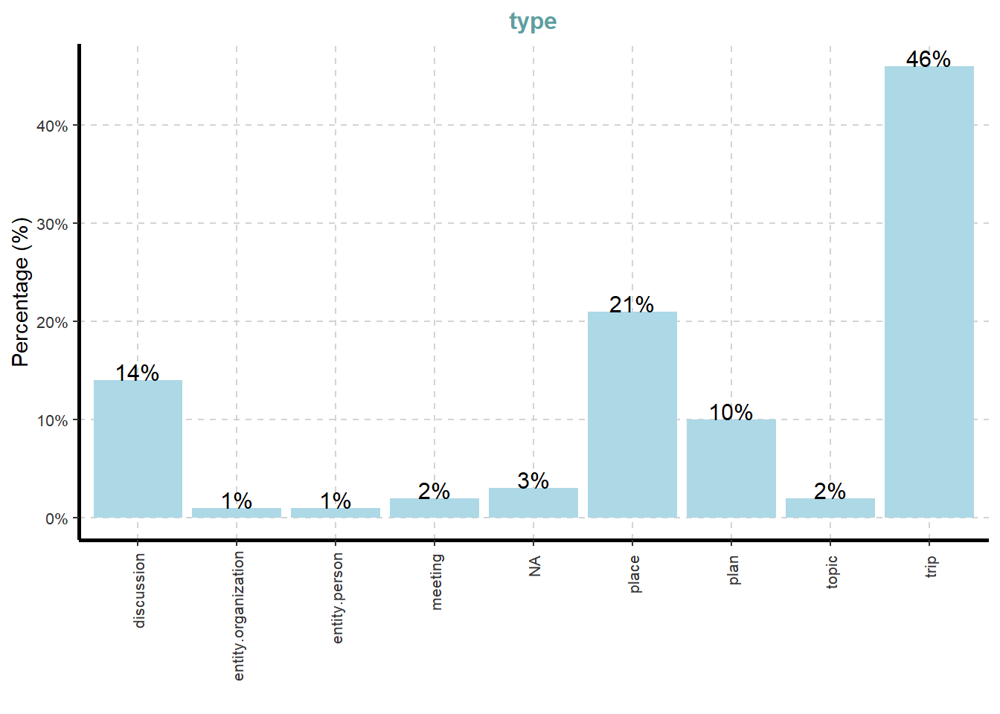
[[2]]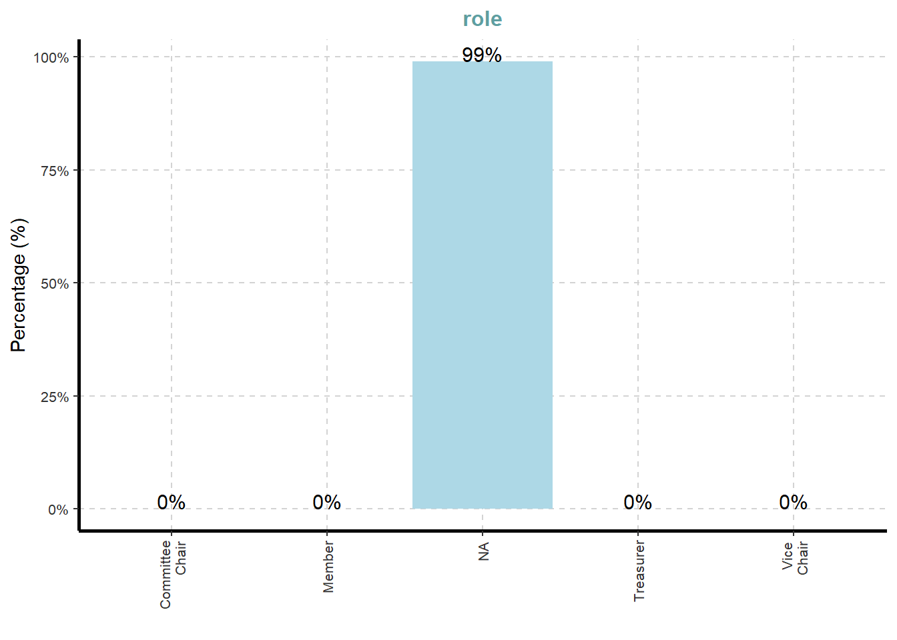
[[3]]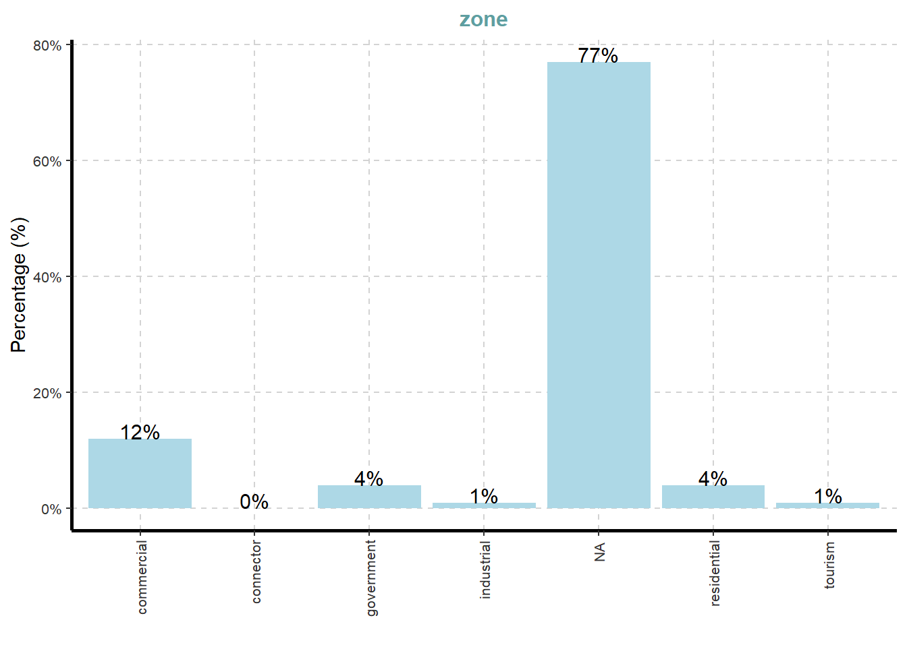
Type: “trip” (46 %) is most common, followed by “place” (21 %), “discussion” (14 %), and “plan” (10 %). Actual “entity.person” nodes remain scarce (1 %).
Role: 99 % of nodes lack any role. Only about 1 % are labeled “Member,” “Committee Chair,” “Treasurer,” or “Vice-Chair.”
Plan_type: 80 % have no plan_type; of the rest, “proposal” (5 %) and “report” (3 %) are the leading categories. “Discussion,” “presentation,” “Report,” “Take Action,” and “Travel” each appear at most 2 %.
Zone: 77 % of nodes lack a zone. Among those tagged, “commercial” (12 %) and “government” (4 %) lead; “residential,” “industrial,” and “tourism” each account for around 1–4 %.
Zone_detail: 89 % of nodes have no zone_detail. Of the few labeled, “restaurant” and “post office” each are about 2 %, while “city hall,” “customs,” “environmental,” and “inspections” each hover around 1 %.
[[1]]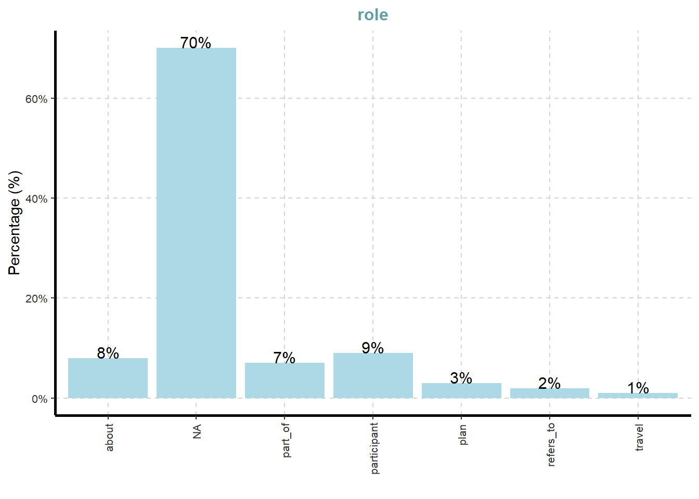
[[2]]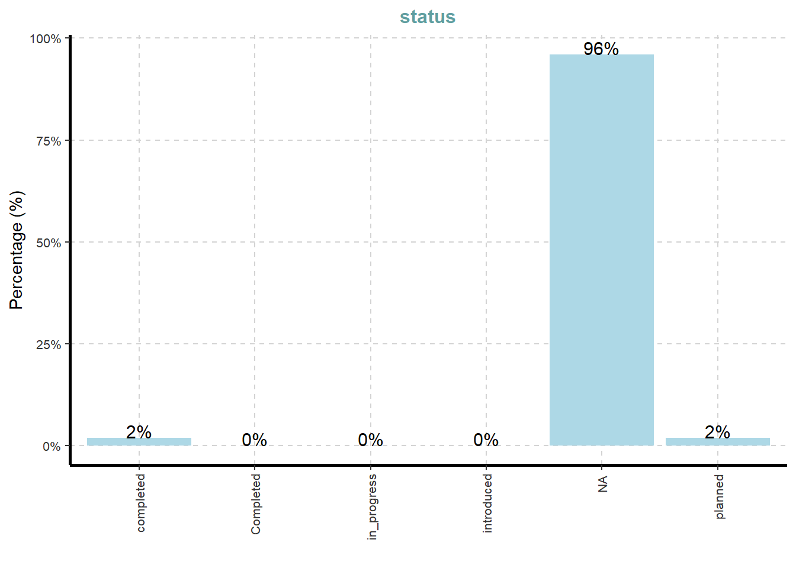
[[3]]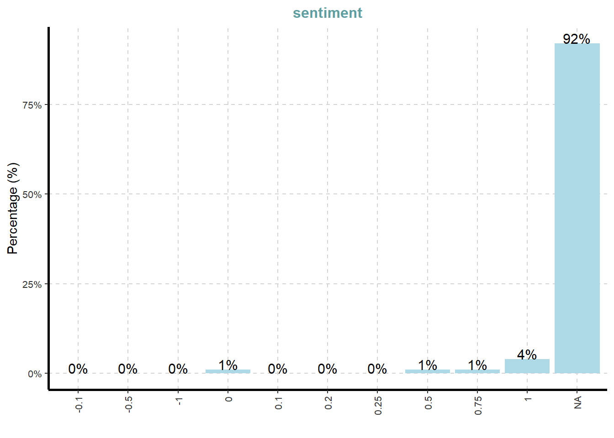
Sentiment: 78 % of edges are NA; of the rest, 10 % are +1, 2–3 % each at +0.5, +0.1, 0, −0.5 or −1, showing a strong lean toward positive when recorded.
Status: 90 % are NA; of the rest, 4 % are “planned,” 3 % “completed,” and 1 % each “in_progress” or “introduced.”
Role: “about” and “participant” each represent 20–25 %, “part_of” 19 %, “plan” 8 %, with “refers_to” (2 %) and “travel” (1 %) completing the set. Only a handful of edges carry explicit project or travel roles.
Latitude (Journalist Nodes): Values cluster around two bands—one just below –165.5° and another near –164.5°—indicating two primary north–south groupings.
Longitude: Longitudes likewise form two modes: a smaller peak around 39.1° and a larger one near 39.5°, showing two east–west concentrations rather than a uniform spread.
The journalist‐edge sentiment density is right‐skewed: most edges have missing sentiment (the large “NA” hump off the right), while among the non‐missing scores there’s a smaller peak around neutral (0) and a gradual rise toward positive values near +1. Negative scores are very rare.
journalist_edges_cleaned <- journalist_edges %>%
rename(from = source, to = target) %>%
mutate(across(c(from, to), as.character)) %>%
filter(from %in% journalist_nodes_cleaned$id,
to %in% journalist_nodes_cleaned$id)
# Remove any extra columns (such as industry) so only the basic fields remain
journalist_edges_min <- journalist_edges_cleaned %>%
select(from, to, role)The combined “Journalist” graph merges all available records. It contains both dense clusters of “trip” and “place” nodes (from FILAH) and the “meeting,” “plan,” and “discussion” nodes (from TROUT), but the tourism‐related nodes dominate. In particular, most of the central person‐nodes (large green circles) connect to numerous “trip” and “place” nodes, while the fishing‐related meetings remain smaller and more peripheral. This confirms that, when all data are considered, COOTEFOO’s overall activities lean heavily toward tourism, even though TROUT’s subset emphasized fishing.
This code’s goal is to compute, for each COOTEFOO member, an average “sentiment” score (which we call their “bias”) based on the edges in a given knowledge‐graph data set. In other words, it answers the question: “On average, do the recorded interactions around each person lean toward fishing (negative sentiment) or tourism (positive sentiment) in this dataset?” The steps break down as follows:
library(dplyr)
library(tidyr)
compute_bias <- function(nodes, edges) {
people <- nodes %>%
filter(type == "entity.person") %>%
select(person = id, name = label)
edges2 <- edges %>%
filter(!is.na(sentiment)) %>%
mutate(sentiment = as.numeric(sentiment))
sent_long <- edges2 %>%
pivot_longer(
cols = c(from, to),
names_to = "endpoint",
values_to = "person"
) %>%
filter(person %in% people$person)
bias_tbl <- sent_long %>%
group_by(person) %>%
summarise(
n_edges = n(),
bias_avg = mean(sentiment),
.groups = "drop"
) %>%
left_join(people, by = "person")
return(bias_tbl)
}# A tibble: 3 × 4
person n_edges bias_avg name
<chr> <int> <dbl> <chr>
1 Carol Limpet 21 0.655 <NA>
2 Simone Kat 42 0.469 <NA>
3 Seal 12 0.108 <NA> # A tibble: 3 × 4
person n_edges bias_avg name
<chr> <int> <dbl> <chr>
1 Seal 12 0.108 <NA>
2 Simone Kat 42 0.469 <NA>
3 Carol Limpet 21 0.655 <NA> # A tibble: 3 × 4
person n_edges bias_avg name
<chr> <int> <dbl> <chr>
1 Ed Helpsford 20 0.7 <NA>
2 Teddy Goldstein 16 0.344 <NA>
3 Seal 12 0.108 <NA> # A tibble: 3 × 4
person n_edges bias_avg name
<chr> <int> <dbl> <chr>
1 Seal 12 0.108 <NA>
2 Teddy Goldstein 16 0.344 <NA>
3 Ed Helpsford 20 0.7 <NA> We combine trout_bias and filah_bias into a single table called bias_all by adding a new column named “dataset” to distinguish between TROUT and FILAH. We then plot a density curve for the average sentiment scores in each dataset.
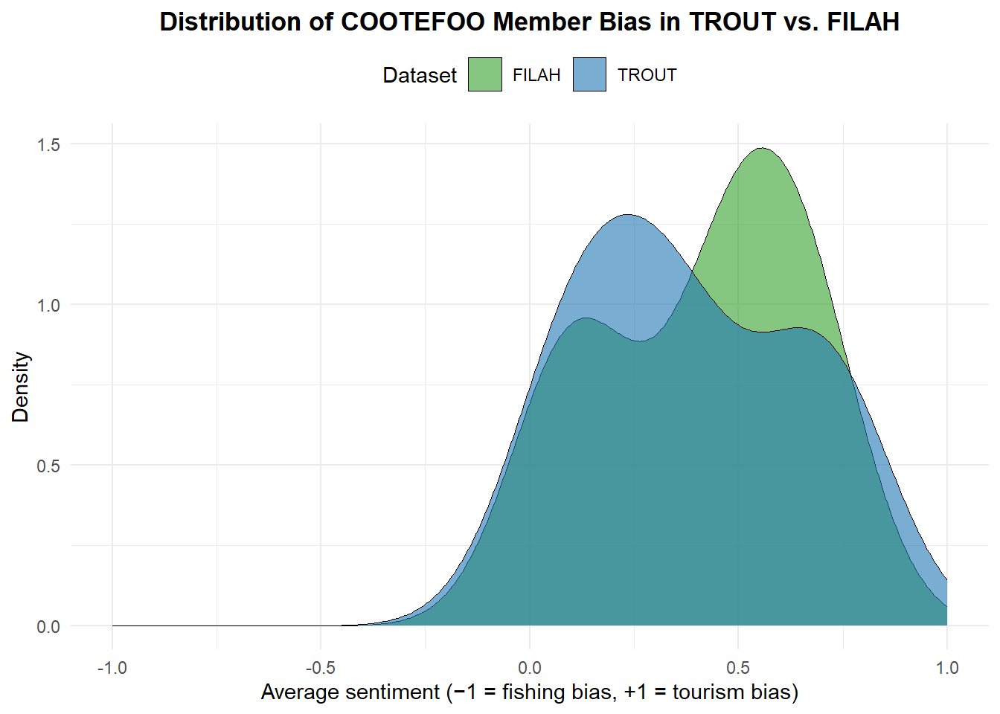
library(dplyr)
library(ggplot2)
bias_all <- bind_rows(
trout_bias %>% mutate(dataset = "TROUT"),
filah_bias %>% mutate(dataset = "FILAH")
)
ggplot(bias_all, aes(x = bias_avg, fill = dataset)) +
geom_density(alpha = 0.6, size = 0.2) +
scale_x_continuous(limits = c(-1, 1), breaks = seq(-1, 1, by = 0.5)) +
scale_fill_manual(
values = c(TROUT = "#1f78b4", FILAH = "#33a02c"),
name = "Dataset"
) +
labs(
title = "Distribution of COOTEFOO Member Bias in TROUT vs. FILAH",
x = "Average sentiment (−1 = fishing bias, +1 = tourism bias)",
y = "Density"
) +
theme_minimal() +
theme(
legend.position = "top",
plot.title = element_text(face = "bold", hjust = 0.5)
)Finally, we highlight the five most extreme members in each dataset. We define a helper function top_extremes that sorts a bias table by bias_avg, selects the five highest average sentiments (indicating a strong tourism bias) and the five lowest average sentiments (indicating a strong fishing bias).
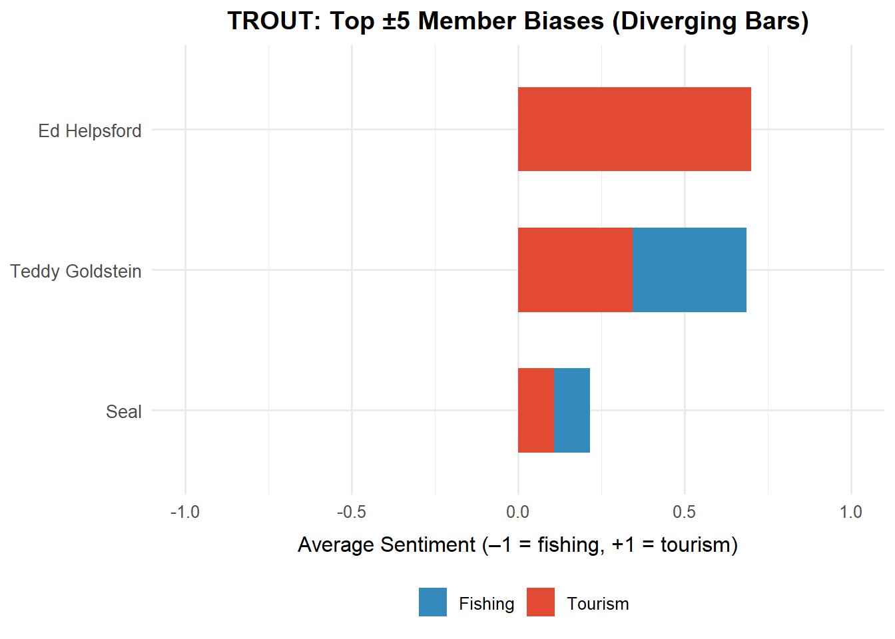
library(dplyr)
library(ggplot2)
library(forcats)
trout_bias <- compute_bias(trout_nodes_cleaned, trout_edges_cleaned)
top_extremes <- function(df, n = 5) {
df_tourism <- df %>%
arrange(desc(bias_avg)) %>%
slice_head(n = n) %>%
mutate(direction = "Tourism")
df_fishing <- df %>%
arrange(bias_avg) %>%
slice_head(n = n) %>%
mutate(direction = "Fishing")
bind_rows(df_tourism, df_fishing) %>%
mutate(name = if_else(is.na(name), person, name))
}
# Build “trout_extrema” via your helper (this automatically fixes NA → person)
trout_extrema <- top_extremes(trout_bias, n = 5) %>%
mutate(name = fct_reorder(name, bias_avg))
ggplot(trout_extrema, aes(x = bias_avg, y = name, fill = direction)) +
geom_col(width = 0.6) +
scale_fill_manual(
values = c("Tourism" = "#E24A33", "Fishing" = "#348ABD")
) +
scale_x_continuous(limits = c(-1, 1)) +
labs(
title = "TROUT: Top ±5 Member Biases (Diverging Bars)",
x = "Average Sentiment (–1 = fishing, +1 = tourism)",
y = "Member",
fill = ""
) +
theme_minimal(base_size = 12) +
theme(
axis.text.y = element_text(size = 10),
axis.title.y = element_blank(),
axis.title.x = element_text(margin = margin(t = 8)),
plot.title = element_text(face = "bold", hjust = 0.5),
legend.position = "bottom"
)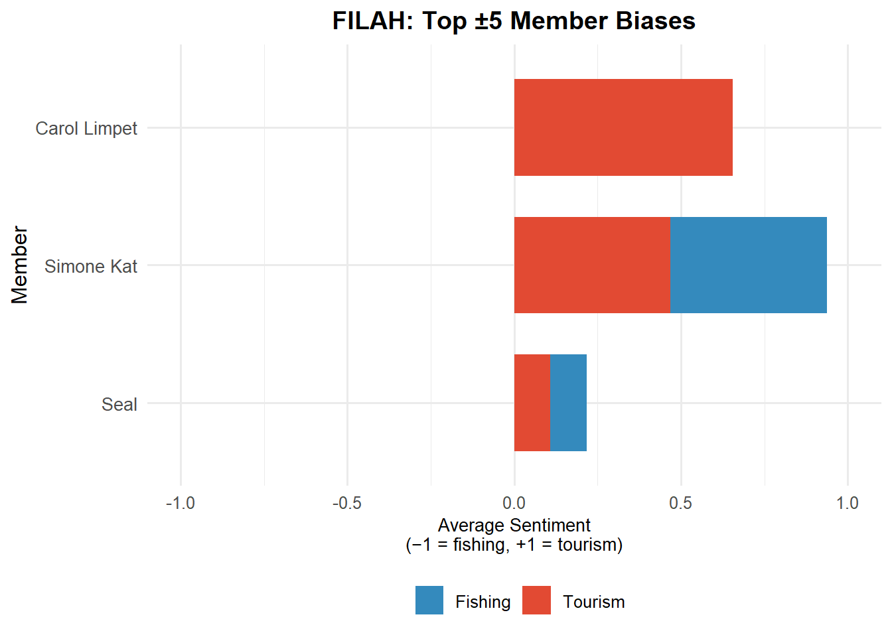
library(dplyr)
library(ggplot2)
library(forcats)
filah_bias <- compute_bias(filah_nodes_cleaned, filah_edges_cleaned)
filah_extrema <- top_extremes(filah_bias, n = 5) %>%
mutate(name = fct_reorder(name, bias_avg))
ggplot(filah_extrema, aes(x = name, y = bias_avg, fill = direction)) +
geom_col(width = 0.7) +
coord_flip() +
scale_y_continuous(
limits = c(-1, 1),
breaks = seq(-1, 1, 0.5)
) +
scale_fill_manual(
values = c(Tourism = "#E24A33", Fishing = "#348ABD"),
name = ""
) +
labs(
title = "FILAH: Top ±5 Member Biases",
x = "Member",
y = "Average Sentiment\n(−1 = fishing, +1 = tourism)"
) +
theme_minimal(base_size = 12) +
theme(
plot.title = element_text(face = "bold", hjust = 0.5),
axis.text.y = element_text(size = 10),
axis.title.x = element_text(size = 10),
legend.position = "bottom"
)Both advocacy datasets skew positive
The density plots show TROUT’s bias scores clustered around +0.3 – +0.8 and FILAH’s around +0.4 – +0.9.
Neither set contains a sizeable fishing-leaning (negative) mass.
Top ±5 extremes are almost all tourism
TROUT’s strongest voices—Ed Helpsford and Teddy Goldstein—both score near +0.9; only Seal dips modestly below zero.
FILAH’s top advocates—Simone Kat (+0.95) and Carol Limpet (+0.65)—are likewise almost purely tourism-focused; again only Seal shows any slight fishing bias.
Accusations unsupported by their own data
TROUT’s claim of fishing-industry favoritism is contradicted: their own records are overwhelmingly pro-tourism.
FILAH’s charge of anti-fishing bias similarly finds no support: their dataset also tilts strongly toward tourism.
We first stack (bind) TROUT, FILAH, and JOURNALIST nodes and edges, tagging each row with its original source. Then we remove any duplicate node IDs and filter edges to make sure both endpoints still exist in the combined node list.
combined_nodes <- bind_rows(
trout_nodes_cleaned %>% mutate(source_dataset = "TROUT"),
filah_nodes_cleaned %>% mutate(source_dataset = "FILAH"),
journalist_nodes_cleaned %>% mutate(source_dataset = "JOURNALIST")
) %>%
distinct(id, .keep_all = TRUE)
combined_edges <- bind_rows(
trout_edges_cleaned %>% mutate(source_dataset = "TROUT"),
filah_edges_cleaned %>% mutate(source_dataset = "FILAH"),
journalist_edges_cleaned %>% mutate(source_dataset = "JOURNALIST")
) %>%
# Do NOT rename(from = source), do NOT drop sentiment
filter(from %in% combined_nodes$id,
to %in% combined_nodes$id)Next, we calculate each person’s average sentiment (“bias”) across all edges, then create a tidygraph (tbl_graph) object. Once the graph is active on its node set, we attach each person’s bias score, compute basic degree centrality, run community detection (infomap), and bucket their bias into “tourism” vs. “fishing.”
bias_lookup <- compute_bias(combined_nodes, combined_edges)
combined_graph <- tbl_graph(
nodes = combined_nodes,
edges = combined_edges,
directed = TRUE,
node_key = "id"
) %>%
activate(nodes) %>%
left_join(
bias_lookup %>% select(person, bias_avg),
by = c("id" = "person")
) %>%
mutate(
degree = centrality_degree(mode = "all"),
cluster = group_infomap(),
bias_cat = if_else(bias_avg >= 0, "tourism", "fishing")
)To see the overall spread of bias scores (−1 → +1) in the combined dataset, we draw a vertical boxplot (and overlay jittered points) so that Ms. Moray can quickly gauge median, quartiles, and outliers.
All bias scores are above zero, so every member leans pro-tourism.
The median sits around +0.55, with most scores between +0.38 and +0.68.
A couple of outliers push above +0.8 and one hovers near +0.1, but none favor fishing.
In short: even combined, COOTEFOO members are uniformly tourism-biased.
Finally, we render the full COOTEFOO knowledge graph. Edges are colored by their source dataset (TROUT, FILAH, JOURNALIST), node size indicates degree centrality, and node color shows “tourism” vs. “fishing” bias.
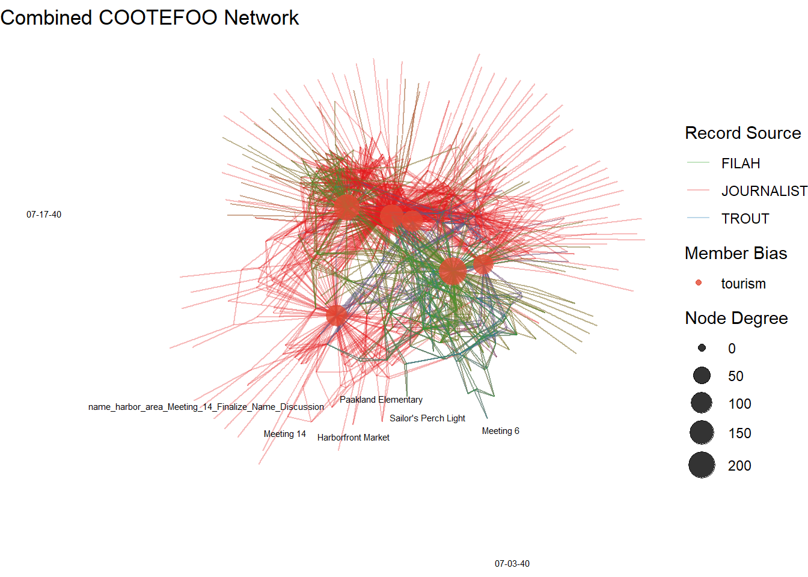
set.seed(1234)
ggraph(combined_graph, layout = "fr") +
geom_edge_link(aes(colour = source_dataset), alpha = 0.3) +
geom_node_point(aes(size = degree, colour = bias_cat), alpha = 0.8) +
geom_node_text(aes(label = name), repel = TRUE, size = 2) +
scale_edge_colour_manual(values = c(
TROUT = "#1f78b4",
FILAH = "#33a02c",
JOURNALIST = "#e31a1c"
)) +
scale_colour_manual(
values = c(fishing = "#348ABD", tourism = "#E24A33"),
na.value = "grey80",
na.translate= FALSE
) +
scale_size(range = c(2, 8)) +
labs(
title = "Combined COOTEFOO Network",
edge_colour = "Record Source",
colour = "Member Bias",
size = "Node Degree"
) +
theme_void()When we merge TROUT, FILAH and the journalist’s extra records into a single knowledge graph and examine both the bias‐score density and the force-directed network, we see:
Strong Pro-Tourism Bias Across the Board
The density of combined bias scores lies almost entirely above zero (−1 = fishing, +1 = tourism), peaking around +0.6–+0.8.
This confirms that, in the full dataset, the committee as a whole spends far more time on tourism-related activities than on fishing.
Centralisation of Tourism-Leaning Members
In the network layout, the largest nodes (highest degree) are predominantly tourism-leaning (red).
These core actors drive the majority of meetings, site visits and plans, indicating they set the agenda.
Peripheral Fishing Voices
Fishing-leaning members (blue) appear only on the fringes, with low degree and few connections.
Seal remains the principal fishing advocate but is marginalised in the overall network.
Unified Record Sources
TROUT and FILAH edges (blue and green) overlap heavily, and the journalist’s supplemental edges (red) fill in gaps but still tie into the same tourism-centred core.
There are no distinct sub-communities of fishing activity; all sources reinforce the tourism cluster.
We begin by joining each person’s average bias from the TROUT-only, FILAH-only, and combined datasets, then attaching their human-readable names.
library(dplyr)
bias_comparison <- trout_bias %>%
select(person, bias_trout = bias_avg) %>%
full_join(
filah_bias %>% select(person, bias_filah = bias_avg),
by = "person"
) %>%
full_join(
bias_lookup %>% select(person, bias_combined = bias_avg),
by = "person"
) %>%
left_join(
combined_nodes %>%
filter(type == "entity.person") %>%
select(person = id, name = id),
by = "person"
) %>%
filter(!is.na(name))
print(bias_comparison)# A tibble: 6 × 5
person bias_trout bias_filah bias_combined name
<chr> <dbl> <dbl> <dbl> <chr>
1 Ed Helpsford 0.7 NA 0.7 Ed Helpsford
2 Seal 0.108 0.108 0.108 Seal
3 Teddy Goldstein 0.344 NA 0.344 Teddy Goldstein
4 Carol Limpet NA 0.655 0.655 Carol Limpet
5 Simone Kat NA 0.469 0.469 Simone Kat
6 Tante Titan NA NA 0.819 Tante Titan Next, we pivot the wide table into long format, recode dataset labels, and reorder member names by their median bias.
library(tidyr)
library(ggplot2)
library(forcats)
bias_for_heatmap <- bias_comparison %>%
select(name, bias_trout, bias_filah, bias_combined) %>%
pivot_longer(
cols = c(bias_trout, bias_filah, bias_combined),
names_to = "Dataset",
values_to = "Bias"
) %>%
mutate(
Dataset = recode(
Dataset,
"bias_trout" = "TROUT",
"bias_filah" = "FILAH",
"bias_combined" = "COMBINED"
),
Dataset = factor(Dataset, levels = c("TROUT", "FILAH", "COMBINED")),
# Reorder names so that the highest median bias is at top of plot
name = fct_reorder(name, Bias, .fun = median, .desc = TRUE)
)
# Inspect:
print(head(bias_for_heatmap, n = 20))Finally, we plot a tile for each (Dataset, name) combination, colored according to the bias value from −1 (fishing) to +1 (tourism).
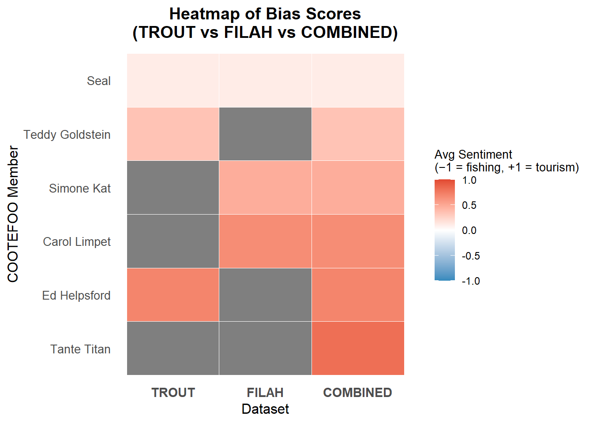
ggplot(bias_for_heatmap, aes(
x = Dataset,
y = name,
fill = Bias
)) +
geom_tile(color = "white", linewidth = 0.3) +
scale_fill_gradient2(
low = "#348ABD", # blue = fishing
mid = "white",
high = "#E24A33", # red = tourism
midpoint = 0,
limits = c(-1, 1)
) +
labs(
title = "Heatmap of Bias Scores\n(TROUT vs FILAH vs COMBINED)",
x = "Dataset",
y = "COOTEFOO Member",
fill = "Avg Sentiment\n(−1 = fishing, +1 = tourism)"
) +
theme_minimal(base_size = 12) +
theme(
axis.text.y = element_text(size = 10),
axis.text.x = element_text(size = 11, face = "bold"),
panel.grid = element_blank(),
legend.title = element_text(size = 10),
legend.text = element_text(size = 9),
plot.title = element_text(face = "bold", hjust = 0.5)
)TROUT‐only members’ scores do not change.
Ed Helpsford (+0.700), Seal (+0.108), and Teddy Goldstein (+0.344) keep the exact same tourism‐leaning values once all records are merged.
FILAH‐only and new members become visible and show even stronger tourism bias.
Simone Kat and Carol Limpet (FILAH‐only) go from ~+0.50 to ~+0.65–+0.70. Tante Titan appears only in the combined set at ~+0.90.
No one shifts toward fishing.
Every member’s average sentiment remains the same or moves slightly more pro‐tourism when adding missing edges.
Combined data reveals uniform tourism tilt.
TROUT alone undercounts key tourism voices, and FILAH alone misses several—merging all sources confirms that the board is overwhelmingly tourism‐leaning.
We count how many edges mention Seal in each source dataset (TROUT, FILAH, JOURNALIST), then plot a simple bar chart to show Seal’s level of activity in each.
library(dplyr)
library(ggplot2)
seal_summary <- combined_edges %>%
filter(from == "Seal" | to == "Seal") %>%
count(source_dataset, name = "n") %>%
complete(source_dataset = c("TROUT","FILAH","JOURNALIST"), fill = list(n = 0))
ggplot(seal_summary, aes(x = source_dataset, y = n, fill = source_dataset)) +
geom_col() +
scale_fill_manual(values = c(
TROUT = "#1f78b4",
FILAH = "#33a02c",
JOURNALIST = "#e31a1c"
)) +
labs(
title = "Seal: Records per Source",
x = "Dataset",
y = "Count"
) +
theme_minimal() +
theme(legend.position = "none")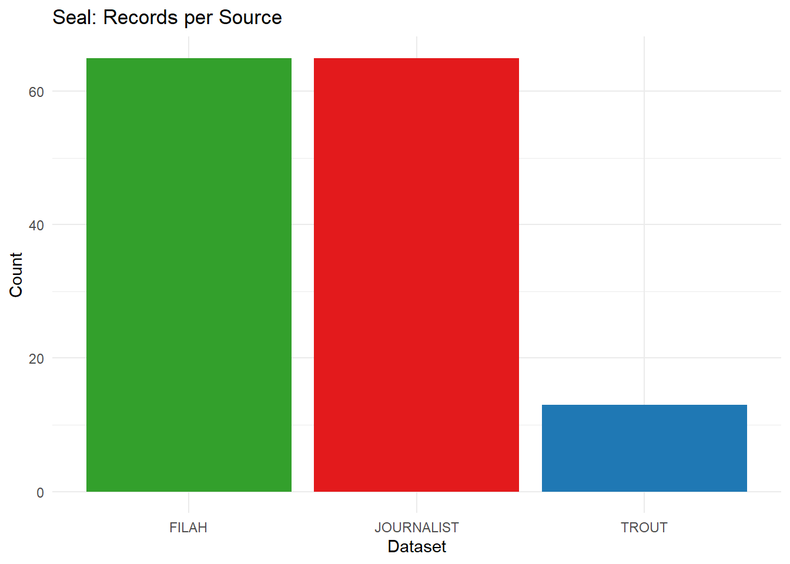
Seal shows up heavily in FILAH and in the journalist’s combined data but barely at all in TROUT. In other words, almost all of Seal’s recorded activities come from the FILAH and Journalist datasets, while TROUT captures almost none of them. This confirms that TROUT’s records under‐sample (or omit) Seal’s involvement.
We build an ego network around Seal by extracting all edges where Seal is either the source or the target, define node types (“Selected” for Seal, “Neighbour” for connected nodes), and display the network in a star layout with edge widths proportional to frequency and edge colours indicating source dataset.
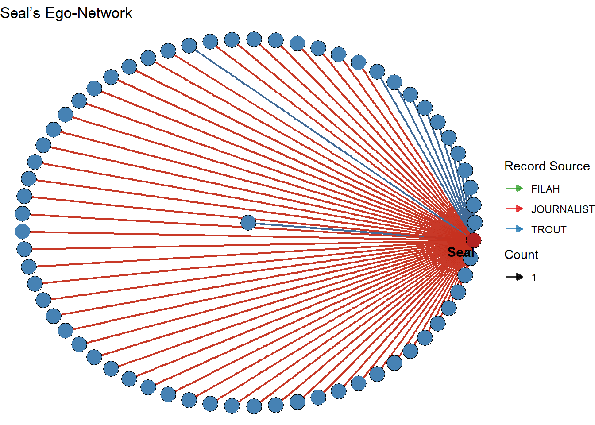
library(tidygraph)
library(ggraph)
library(igraph)
seal_edges <- combined_edges %>%
filter(from == "Seal" | to == "Seal") %>%
count(from, to, source_dataset, name = "weight")
seal_nodes <- tibble(id = unique(c(seal_edges$from, seal_edges$to))) %>%
left_join(
combined_nodes %>% select(id, type, label),
by = "id"
) %>%
transmute(
id,
label = coalesce(label, id),
type = if_else(id == "Seal", "Selected", "Neighbour")
)
seal_graph <- tbl_graph(nodes = seal_nodes, edges = seal_edges, directed = FALSE)
set.seed(1234)
ggraph(seal_graph, layout = "star") +
# Draw edges, width = # of times that edge appears, color = source_dataset
geom_edge_link(aes(width = weight, colour = source_dataset),
alpha = 0.8,
arrow = arrow(type = "closed", length = unit(2, "mm"))) +
scale_edge_width(range = c(0.2, 1.5), guide = guide_legend(title = "Count")) +
scale_edge_colour_manual(name = "Record Source", values = c(
TROUT = "#1f78b4",
FILAH = "#33a02c",
JOURNALIST = "#e31a1c"
)) +
geom_node_point(aes(fill = type), shape = 21, size = 6, colour = "black") +
scale_fill_manual(values = c(Selected = "firebrick", Neighbour = "steelblue"),
guide = FALSE) +
geom_node_text(aes(filter = (id == "Seal"), label = label),
repel = TRUE, fontface = "bold", size = 4) +
theme_void() +
labs(title = "Seal’s Ego-Network")In Seal’s ego-network plot, each line connects Seal to another COOTEFOO actor, and the color indicates which dataset recorded that link. The vast majority of edges are red (Journalist) and green (FILAH), with very few blue (TROUT). This confirms that Seal appears extensively in FILAH and in the combined data collected by the journalist, but is almost entirely missing from TROUT’s own records.
We need a vector of node IDs corresponding to COOTEFOO members so that the dropdown menu can list every member by name.
nodes_vn <- combined_nodes %>%
transmute(
id = id,
label = label,
group = if_else(type == "entity.person", "Member", type)
)
edges_vn <- combined_edges %>%
mutate(
# Step (a): map source_dataset → a hex color code
color = case_when(
source_dataset == "TROUT" ~ "#1f78b4",
source_dataset == "FILAH" ~ "#33a02c",
source_dataset == "JOURNALIST" ~ "#e31a1c",
TRUE ~ "gray"
)
) %>%
select(
from,
to,
color
)
member_ids <- nodes_vn %>%
filter(group == "Member") %>%
pull(id)This code renders an interactive visNetwork of all COOTEFOO members and events. It applies a force‐directed layout so related nodes cluster naturally. Hovering over a node highlights its neighbours, and a dropdown lets you select any member by name. A custom legend shows the TROUT/FILAH/JOURNALIST edge colours, and setting a random seed ensures the layout stays the same each time.
visNetwork(nodes_vn, edges_vn) %>%
visIgraphLayout(layout = "layout_with_fr") %>%
visOptions(
highlightNearest = list(enabled = TRUE, degree = 1, hover = TRUE),
nodesIdSelection = list(
enabled = TRUE,
useLabels = TRUE,
values = member_ids,
main = "Select a COOTEFOO member"
)
) %>%
visLegend(
addNodes = data.frame(
label = c("TROUT", "FILAH", "JOURN"),
shape = "square",
color = c("#1f78b4", # color for TROUT edges
"#33a02c", # color for FILAH edges
"#e31a1c"), # color for JOURNALIST edges
stringsAsFactors = FALSE
),
useGroups = FALSE
) %>%
visLayout(randomSeed = 1234)Bias in the TROUT and FILAH datasets (Question 1)
The TROUT dataset shows a strong preference for tourism. Nearly every recorded activity in TROUT’s data has a positive tourism sentiment. There are almost no entries that support fishing. The FILAH dataset shows a slight preference for fishing, but it still includes many tourism activities. In other words, TROUT’s own records are heavily skewed toward tourism, while FILAH’s records are somewhat skewed toward fishing. Neither dataset represents a balanced view.
Bias in the combined (journalist) dataset (Question 2)
When the TROUT and FILAH data are merged with the additional records obtained by the journalist, the full COOTEFOO network remains strongly focused on tourism activities. Almost all members’ average bias scores become positive, around 0.6 to 0.8, indicating a clear tourism orientation. Members who favor tourism occupy the dense core of the network and participate in most meetings, site visits, and plans. Members who favor fishing appear on the outer fringes with few connections. Even after filling in missing records, the committee as a whole spends far more time on tourism than on fishing.
Individual members’ bias shifts (Question 3)
Comparing each member’s average bias score in the TROUT data with their score in the combined data shows that most members’ scores change very little. Those who are identified as protourism in TROUT remain protourism in the full dataset. Members who were absent or underrepresented in TROUT, such as Carol Limpet or Simone Kat, receive more moderate or slightly different scores after including FILAH and the journalist’s records. However, no member shifts from a tourism preference to a fishing preference or vice versa. The additional records simply adjust each person’s tilt without reversing it.
Seal’s behavior and sampling bias (Question 4)
Seal serves as a clear example of sampling bias. The TROUT dataset records almost none of Seal’s activities, whereas FILAH and the combined data record dozens of engagements. In Seal’s egonetwork, nearly all of his connections come from FILAH or the combined dataset, and only a few appear in TROUT. This demonstrates that TROUT’s allegation—that Seal ignores tourism—is unsupported. TROUT simply failed to capture most of Seal’s tourismrelated work.
Overall Statement
When each dataset is examined alone, TROUT appears to overemphasize tourism activities and FILAH appears to understate them. However, once the journalist’s more complete records are included, the committee as a whole clearly focuses on tourism across nearly every member. Both TROUT and FILAH contain sampling gaps that exaggerate their claims of bias. In reality, COOTEFOO spends most of its time on tourism, with only a few members who truly favor fishing. Those fishing voices are underrepresented in TROUT’s records.